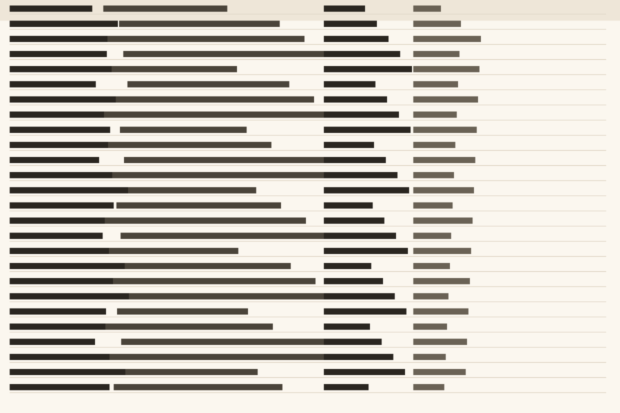

Fixture
A page nothing fires on
This page carries the front page's nav and footer, so the chrome rule has both halves of what
it looks for and a link back to the root. Its prose runs to the same edge as its headings, so
there is no run of rows that stops short of the width the page establishes. Ink is near black on
white throughout, which clears 4.5 to 1 at every size on the page, and the one mark on it is a
stroked rule inside a labelled block.
The number 41 appears in this sentence and is set at body size, which is where a figure
belongs when the sentence is what a reader is meant to take away. A small tracked label sits
above the headline on its own, and a label on its own has never been the thing this tool
refuses. What it refuses is the pairing: a numeral set as the subject of a card, with a caption
under it too small to read.
A capture that earns the column

Glyph-scale structure at 22.71% of the downsampled plane, rendered 757px tall.
Shrinking this to half the measure would destroy what the reader is meant to read, which is
the reason a capture is allowed the column and a render is not.
A table with a grid to scan
Four columns, three rows, and every cell holds a value that differs from the cell beside it.
The row labels are terms, so the first column can be scanned.
What the tool does
It opens a page in a real browser, measures seven things a linter cannot see, prints the
element and the numbers behind every finding, and exits non-zero. A run that could not complete
exits 2 and says which part it could not reach.